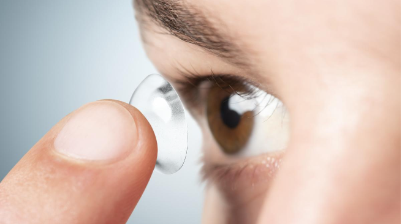
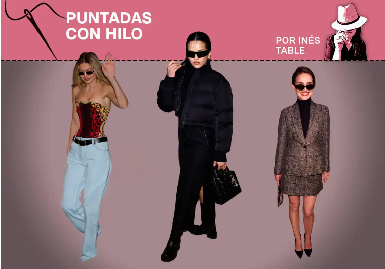

Los gestos y las posturas cotidianas que destrozan tu vista sin que te des cuentaLa distancia a la pantalla al ordenador o tablet, la postura del cuello cuando consultamos el móvil o la costumbre de fijar las vista sin dejar descansos o respiros al ojo son algunas de las prácticas frecuentes que perjudican la vista más de lo que creemos. De hecho, ya se ha comprobado que existe una relación directa entre esos nuevos hábitos relacionados con la tecnología y el aumento exponencial de los problemas de salud visual, según asegura la Dra. Ainhoa de Federico, especialista en Visión natural de la Universidad de Toulouse y creadora del Método 'Volver a ver claro', quien revela cómo podemos prevenir los malos hábitos y posturas perjudiciales que afectan al buen funcionamiento de los ojos.(Link) |
|
|  |
¿Cuál es el origen de las primeras lentillas?En las últimas décadas el empleo de las lentillas se ha multiplicado, coincidiendo con el desarrollo de nuevos materiales, los cuales han permitido que sean cada vez más cómodas. En estos momentos las lentes de contacto más comunes son las blandas, que se fabrican con plásticos hidrofílicos (hidrogeles), que permiten mantener un nivel óptimo de humedad y oxigenación corneal.(Link) |
|  |
Estan de moda las gafas de sol rectangulares, segun gigi hadid, julianne moore y rosaliaEl tour de desfiles que muestra las colecciones más fresquitas del próximo otoño-invierno 2024/25 está a punto de concluir en París, que es la última parada de las semanas de la moda internacionales. Tanto en la capital mundial del trapo como en Milán se han mostrado una infinidad de tendencias nuevas, muchas de ellas con una nostalgia declarada por los años 90.(Link) |
- Tomas Zapata Alvarez
- Ingenieria en informatica
- TI2031/D-IEI-N3-P1-C3/D Rancagua IEI